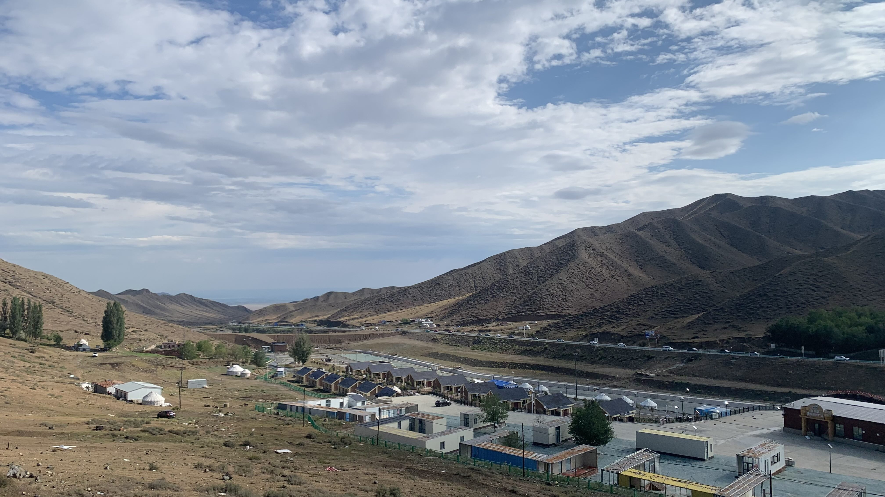
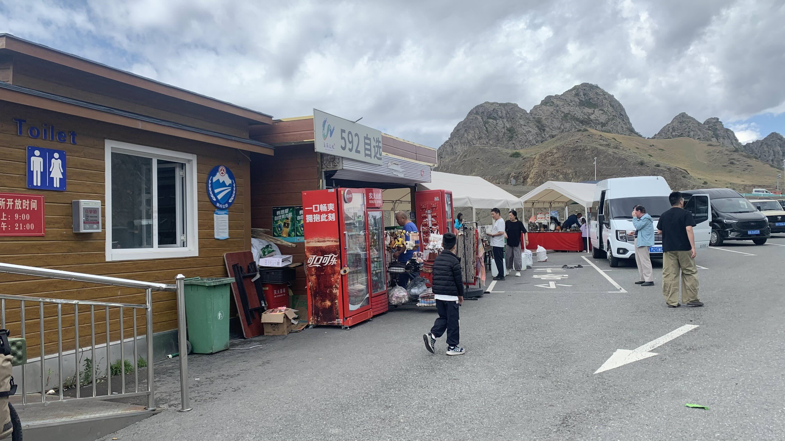
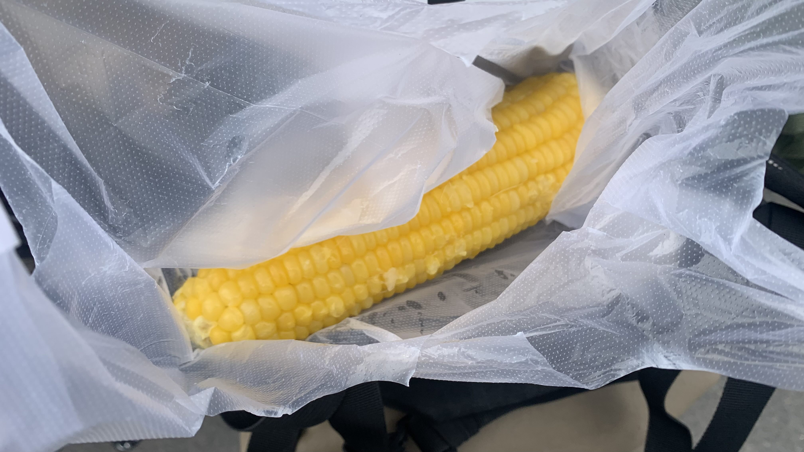
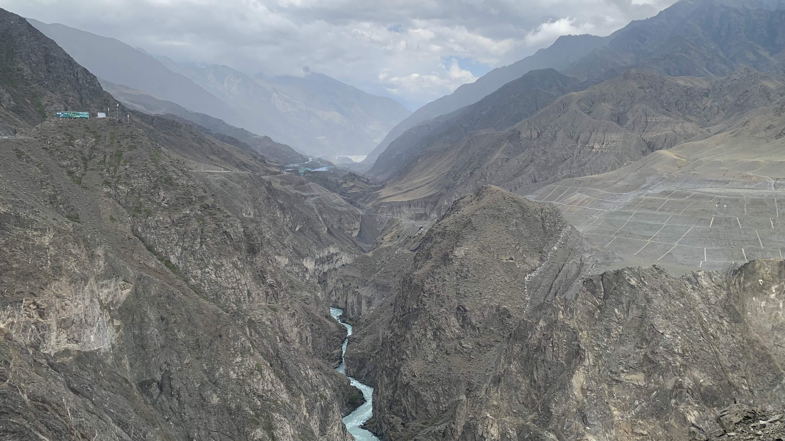
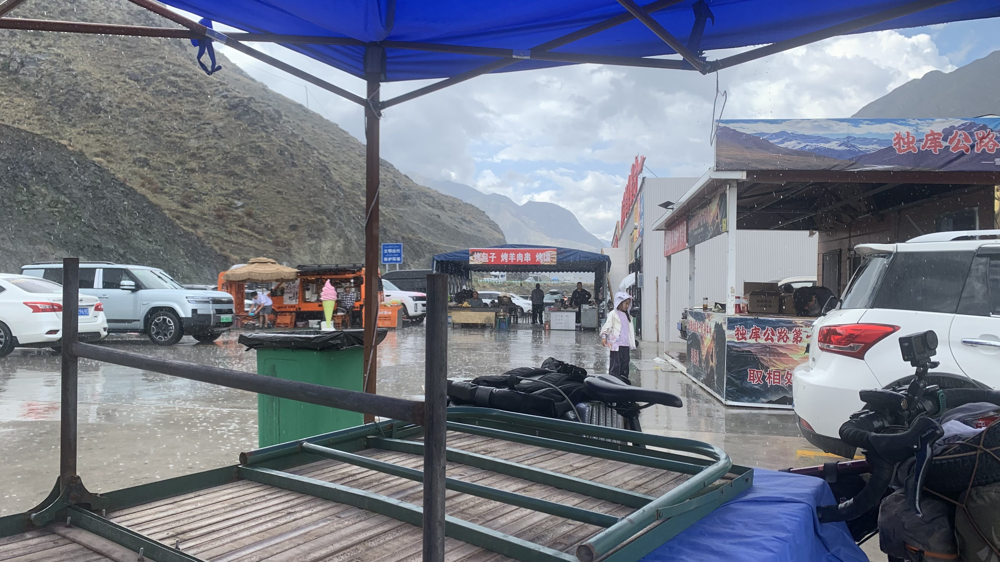
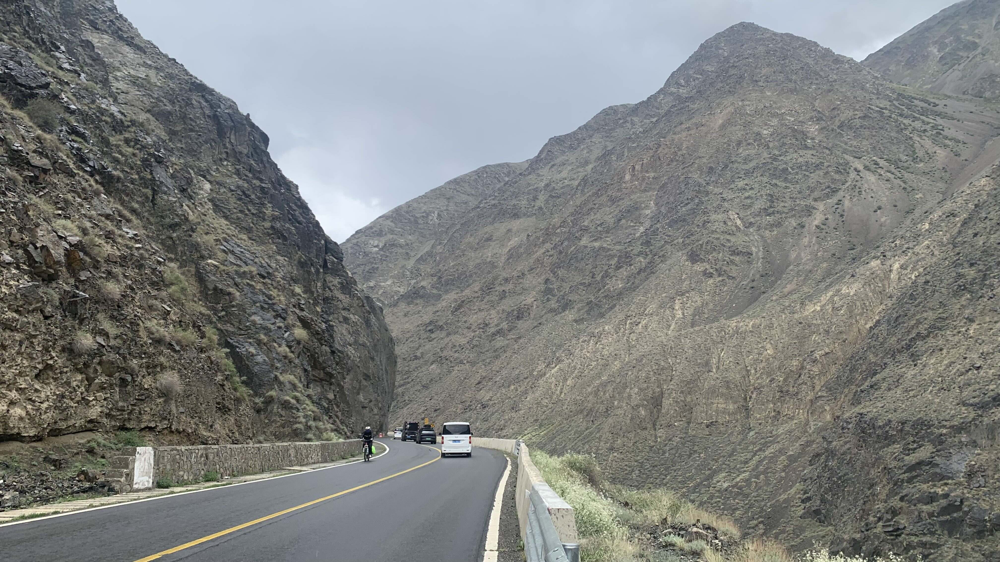
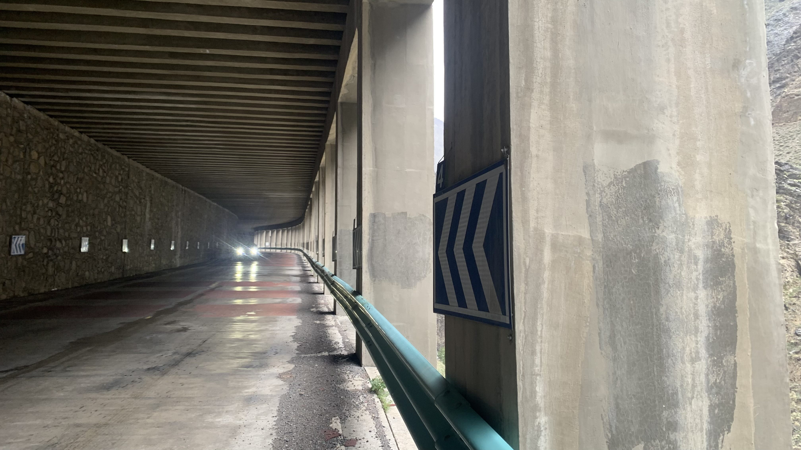
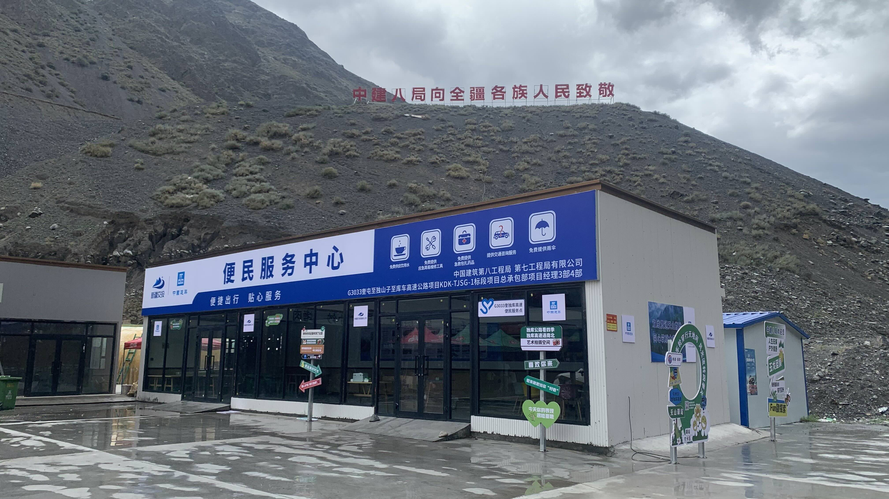
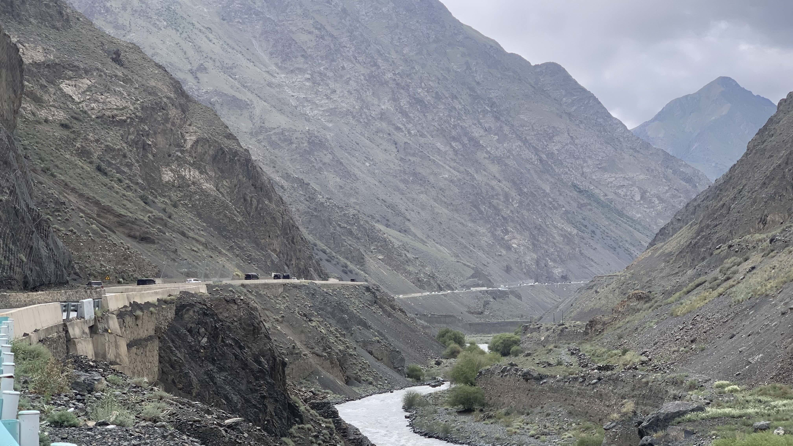
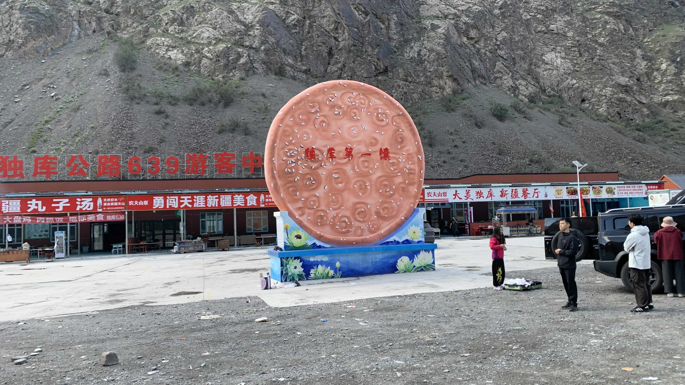

k-Day 148｜獨庫公路（三）傳說中的獨庫
帳篷外不時傳來輛發動離開引擎聲，天才剛亮呢。
隔壁兩個單人帳都還沒收拾，倒是第三個單人帳的機車騎士已經收好行李準備出發。
前面三天都沒有充電，電源幾乎要耗盡了。慢悠悠拉出太陽能板，蹲在旁邊刷牙洗臉。

重新出發啦！回頭看看睡了三個晚上的營區，往天山上前進！

嗯， 什麼風景都還沒看到，這樣的小賣部已經是第二個。密度太誇張了吧！

說是這樣說，既然無法沈浸在山裡，那就讓自己全面擁抱這種接地氣觀光風格吧。煮玉米是軟糯香甜的。（雖然我對軟糯香甜這種用法很反感，但確實這根玉米稱得上軟糯香甜）

把啃了一半的玉米綁在貨架上，接下來的山勢是這樣的。從相片裡應該也能見到不少人工痕跡，現場並沒有感受到應該有的壯闊感。

十二點多又到了一個小賣部，目前規律是五公里一個小的，十公里會有個大的。在遮雨棚下換上雨褲和防水外套，沒有多休息就繼續爬山。

眼前的車輛綿延不絕，從出發至今沒有斷過。不用期待他們會禮讓自行車，跨越黃線超車，在背後狂按喇叭逼車，傳說中的獨庫也就是中國境內的一條公路，中國各省份好的壞的汽車駕駛都來到這裡了。對向車道偶有下山的自行車，不知道是不是從庫車過來的，真是厲害。

過了一個隧道，目前為止沒有感受到一路上大家跟我說的獨庫的危險，絕美風景當然也是還沒體驗到，道路施工品質比較值得讚賞。

又是個便民休息站，並不想休息，抱著某種預感走到門邊拉了一下把手。嗯，是鎖上的。

綿延不絕的車流直到下午三點都沒斷過，騎行體驗不佳。倒是持續緩升的坡度使得身體必須保持在正確的姿勢出力，很適合鍛鍊肌耐力與心肺，前提是不要太在乎車輛排放的廢氣。

四點半抵達一個叫做839的休息區，問了住宿價格，還算能接受。前台的國小生弟弟玩遊戲開著擴音，滿口髒話。沙發上可能是員工或老闆的女子同樣開著擴音看中劇，老闆坐在外面和客人聊天，進門後問我會不會覺得吵？「會」，我毫不猶豫點頭回道。老闆於是讓小孩回自己家玩，很可惜小孩拒絕了這項請求。
把濕透的衣服洗乾淨晾好，塞上耳塞躺下，幾秒鐘就睡著了。
今日花費： 玉米 6、住宿 48元